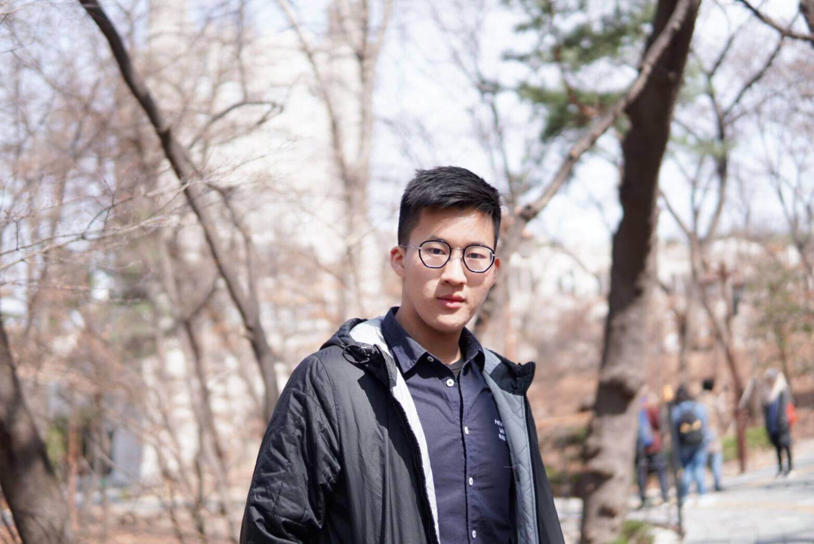

PhD Candidate, The School of Social Sciences, University of New South Wales (UNSW), Sydney, Australia
I am a Ph.D. Candidate at the School of Social Sciences, UNSW Sydney, supervised by Prof. Fengshi WU and Prof. Elizabeth Thurbon. Prior to this, I served as a consultant at the UNESCO Regional Office in Bangkok, and supported the team to Literacy and Lifelong Learning Team in implementing a regional cooperative program on equitable education projects in Southeast Asia, and I'm a country informant for the Asia-Europe Science & Technology Diplomacy Initiative of the Asia-Europe Foundation (ASEF) Singapore. I've published analytical pieces and articles with leading research institutions, academic journals, and media outlets, including the Asia Research Institute at the National University of Singapore, the Saw Swee Hock Southeast Asia Centre at the London School of Economics and Political Science, the Australian Institute of International Affairs (AIIA) – Australian Outlook, NTU's S. Rajaratnam School of International Studies (RSIS) Commentary, Kyoto University's Kyoto Review of Southeast Asia, the Diplomat, East Asia Forum, Lianhe Zaobao, and the Bangkok Post. I also presented my work at various international conferences.